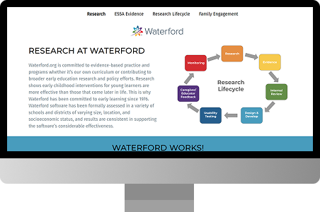
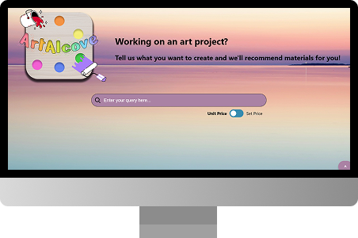
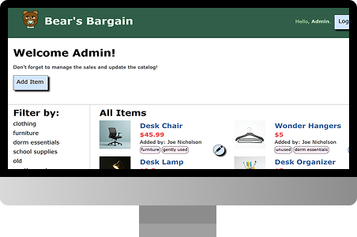
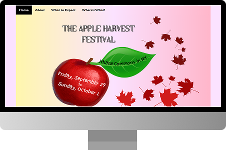
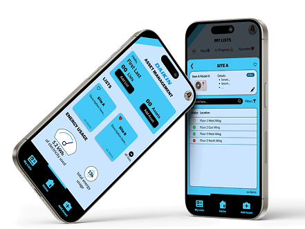
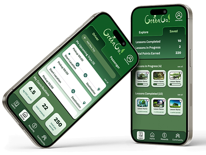
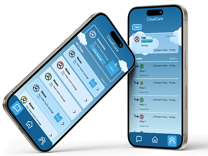

This website was made for the Research team at Waterford.org. Prior to this, the nonprofit organization had a general website encompassing all parts of their purpose. However, there was not much focus on the Research department's initiatives. Thus, this website was set into motion!
Programming
Web Development
Interactive Design
User Experience
Usability Testing
Working with Clients
Leading a Team

This information retrieval system website was made to provide users with a way to discover different types of art materials (from an art site, Blick) that would most appropriately fit their desired art project.
Programming
UX Design
Databases
Web Scraping
Query Analysis
Cosine Similarity
Text Mining
Singular Value Decomposition
Collaborating in a Team

This website was created for college students looking to browse from a catalog of second-hand items at bargained prices. There is also an admin login to the site where verified users can edit and update the catalog.
Programming
Web Development
Server-Side
Databases
Interactive Design
Graphic Design
Multi-User Focus
Collaborating in a Team

This website was made to advertise the Apple Harvest Festival for 2023. It contains all the information needed before attending the festival!
Programming
Web Development
User-Centered Design
Field Interviews
Graphic Design
Introductory Project

An HVAC equipment scanner for tracking energy usage, maintenance, and more
stuff

A rideshare system where drivers can carpool and earn points by being sustainable
stuff

An app allowing mental health supporters to distribute care with other supporters
stuff
